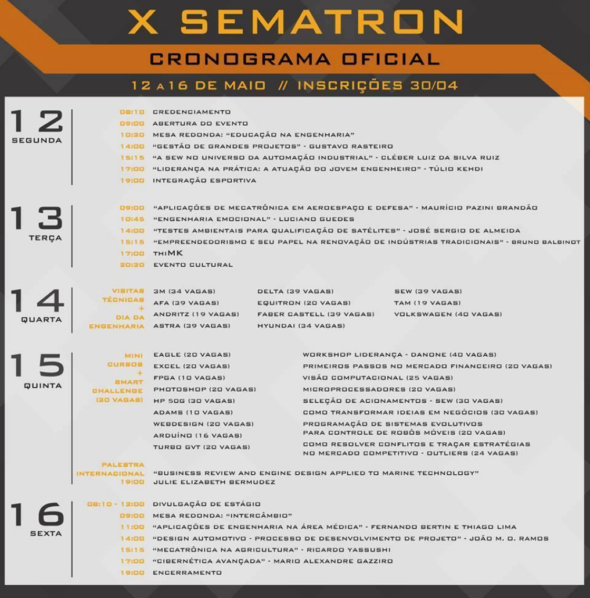

A décima edição da SEMATRON apresentou ainda mais pluralidade em sua
programação e contou com algumas inovações. Nossos participantes puderam
discutir, trocar experiências e aprender sobre os mais diversos temas.
Foram
ao todo mais de 50 atividades, destacando as 12 palestras, sendo 1
internacional; A primeira edição do “thiMK” com 6 palestras dinâmicas; as 2 mesas redondas; as 9
visitas técnicas; os 16 minicursos; a ampliação do Dia da Engenharia e a
Divulgação de Estágio de algumas empresas.
Ressaltamos também a
organização do Alojamento, destinado a abrigar os participantes vindos de fora
de São Carlos. Ao lado estão resumidas as atividades desenvolvidas durante a
Semana
X SEMATRON
508
Participantes
6
UniversidadesParticipantes
9
VisitasTécnicas
12
Palestras
Destaques

Parceiros
IX SEMATRON
533
Participantes
11
Palestras
4
UniversidadesParticipantes
25
Visitas eMinicursos
Destaques
No primeiro dia, após a abertura, uma mesa redonda levou os participantes à discussão do tema “Carreira”, com a participação de ex-alunos da Engenharia Mecatrônica da EESC que atuam hoje em diversas áreas. Depois foram abordados os temas de fabricação de aviões no Brasil, controladores de eixo e gestão de tempo, contando com a participação da Embraer, da SEW e do palestrante Bruno Blankenburg.
No segundo, aconteceu uma mesa redonda sobre VANTs – Veículos Autônomos Não Tripulados. À noite, os participantes puderam desfrutar da apresentação do grupo “Conhecendo o Choro”, que explica um pouco da história desse ritmo legitimamente brasileiro.
Foram oferecidos 14 minicursos que exploravam desde áreas técnicas, como análise por elementos finitos, a aspectos da vida em geral, como educação financeira. O destaque ficou para a noite, com a palestra internacional de Martin David Adams, da Universidad de Chile, intitulada New Concepts in Robotic Navigation and Mapping”.
No segundo, aconteceu uma mesa redonda sobre VANTs – Veículos Autônomos Não Tripulados. À noite, os participantes puderam desfrutar da apresentação do grupo “Conhecendo o Choro”, que explica um pouco da história desse ritmo legitimamente brasileiro.
Foram oferecidos 14 minicursos que exploravam desde áreas técnicas, como análise por elementos finitos, a aspectos da vida em geral, como educação financeira. O destaque ficou para a noite, com a palestra internacional de Martin David Adams, da Universidad de Chile, intitulada New Concepts in Robotic Navigation and Mapping”.

Parceiros

VIII SEMATRON
533
Participantes
11
Palestras
4
UniversidadesParticipantes
25
Visitas eMinicursos
Destaques
No primeiro dia, após a abertura, uma mesa redonda levou os participantes à discussão do tema “Carreira”, com a participação de ex-alunos da Engenharia Mecatrônica da EESC que atuam hoje em diversas áreas. Depois foram abordados os temas de fabricação de aviões no Brasil, controladores de eixo e gestão de tempo, contando com a participação da Embraer, da SEW e do palestrante Bruno Blankenburg.
No segundo, aconteceu uma mesa redonda sobre VANTs – Veículos Autônomos Não Tripulados. À noite, os participantes puderam desfrutar da apresentação do grupo “Conhecendo o Choro”, que explica um pouco da história desse ritmo legitimamente brasileiro.
Foram oferecidos 14 minicursos que exploravam desde áreas técnicas, como análise por elementos finitos, a aspectos da vida em geral, como educação financeira. O destaque ficou para a noite, com a palestra internacional de Martin David Adams, da Universidad de Chile, intitulada New Concepts in Robotic Navigation and Mapping”.
No segundo, aconteceu uma mesa redonda sobre VANTs – Veículos Autônomos Não Tripulados. À noite, os participantes puderam desfrutar da apresentação do grupo “Conhecendo o Choro”, que explica um pouco da história desse ritmo legitimamente brasileiro.
Foram oferecidos 14 minicursos que exploravam desde áreas técnicas, como análise por elementos finitos, a aspectos da vida em geral, como educação financeira. O destaque ficou para a noite, com a palestra internacional de Martin David Adams, da Universidad de Chile, intitulada New Concepts in Robotic Navigation and Mapping”.
Parceiros

VII SEMATRON
Parceiros

VI SEMATRON
Parceiros

V SEMATRON
Parceiros

IV SEMATRON
Parceiros